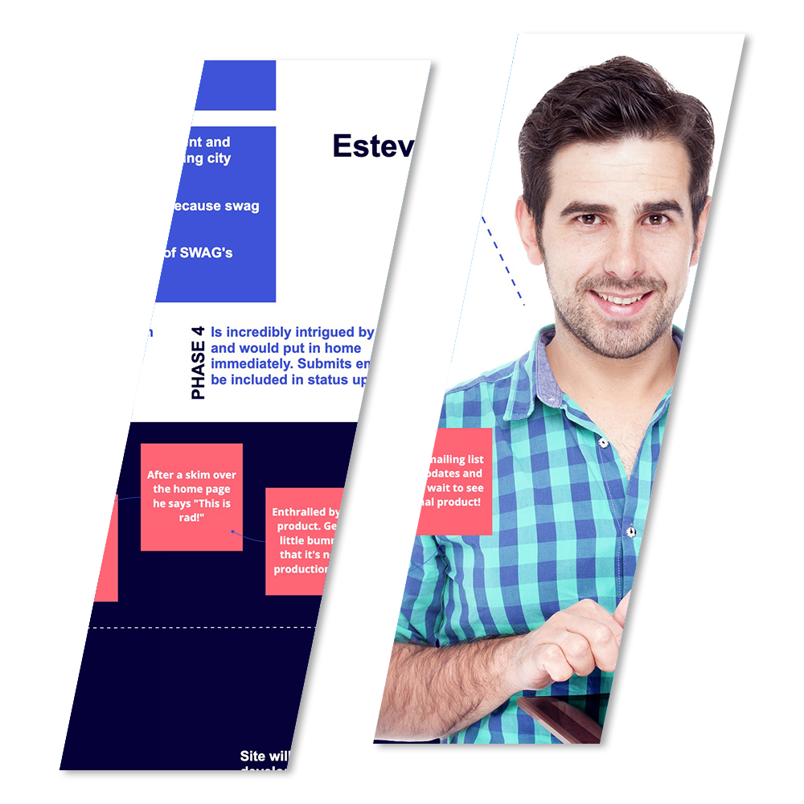
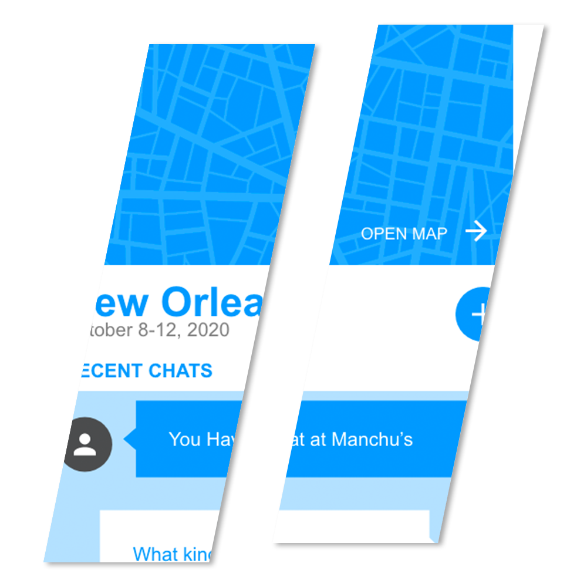
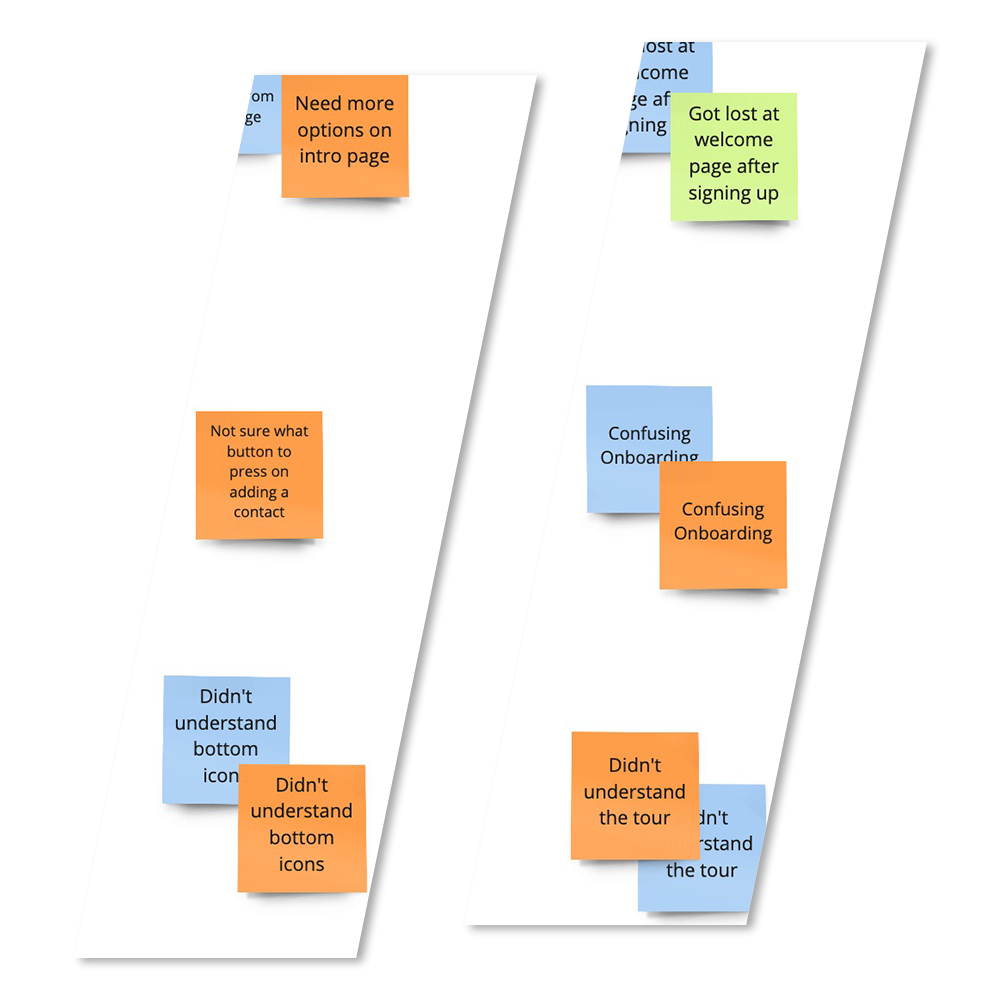

Madison Clark
UX Designer
Hello, I am Madison Clark, a UX/UI designer. I specialize in moving an idea from research to a high-fidelity prototype. I’m skilled in research, ideation, and prototyping and have 15 years experience creating with the end-user in mind.
My UX Skills
Ideation
Keen eye for identifying themes and making sense of all the data collected through qualitative and quantitative research. Utilizing tools like affinity diagrams and empathy maps to define strategic direction.
Prototyping
Mid to Senior level skills in Figma and xD. Love making what the research tells the team into a tangible thing.
Testing
Always seeking improvement in my designs through testing and iterating. Ability to execute the iteration off of the testing results.
